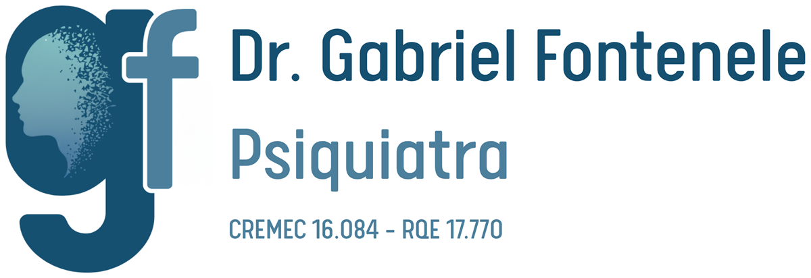

Fármacos
Toque para selecionar. Com dois ou mais selecionados, veja as interações.
Interações
Sobre

Como funciona
Para cada par de itens selecionados, o app cruza as enzimas do CYP450 que um fármaco inibe ou induz com as enzimas que metabolizam o outro, segundo as referências listadas abaixo.
- inibe 2D6 A enzima é inibida: os níveis dos fármacos metabolizados por ela tendem a aumentar (↑).
- induz 3A4 A enzima é induzida: os níveis dos fármacos metabolizados por ela tendem a diminuir (↓).
- 2D6 principal Enzima que metaboliza o fármaco. Vias marcadas como menor aparecem com menos destaque.
Interação múltipla é quando dois ou mais itens atuam sobre o mesmo fármaco: inibindo ou induzindo a mesma enzima (efeito somado), enzimas diferentes ao mesmo tempo, ou em sentidos opostos.
Limitações
- Considera apenas interações farmacocinéticas pelo CYP450 descritas nas referências. Interações farmacodinâmicas e por outras vias (como glicuronidação) não são cruzadas.
- Dois fármacos metabolizados pela mesma enzima, sem que um iniba ou induza essa enzima, não geram alerta.
- Fármacos que aparecem só nas notas (ex.: lamotrigina, fenobarbital, anticoncepcionais) não são selecionáveis; as notas aparecem no detalhe de cada item.
- Onde a potência não é informada, o app mostra “potência não especificada”.
Referências
Aparência
Instalar no celular
No Android (Chrome), abra o menu ⋮ e toque em Instalar app. No iPhone (Safari), toque em Compartilhar e depois em Adicionar à Tela de Início. Depois de instalado, o app funciona sem internet.
Aviso. Ferramenta de apoio à decisão clínica, baseada nas referências listadas acima. Não substitui o julgamento clínico, a bula nem fontes atualizadas.
Dr. Gabriel Fontenele · Psiquiatra
CREMEC 16.084 · RQE 17.770